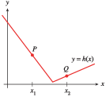
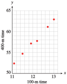
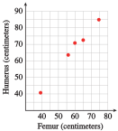

Exercises Chapter 1 Review Problems
Exercise Group.
Write and graph a linear equation for each situation. Then answer the questions.
1.
Last year, Pinwheel Industries introduced a new model calculator. It cost $\(2000\) to develop the calculator and $\(20\) to manufacture each one.
-
Complete the table of values showing the total cost, \(C\text{,}\) of producing \(n\) calculators.
| \(n\) |
\(100\) |
\(500\) |
\(800\) |
\(1200\) |
\(1500\) |
| \(C\) |
\(\hphantom{0000}\) |
\(\hphantom{0000}\) |
\(\hphantom{0000}\) |
\(\hphantom{0000}\) |
\(\hphantom{0000}\) |
Write an equation that expresses \(C\) in terms of \(n\text{.}\)
Graph the equation by hand.
What is the cost of producing \(1000\) calculators? Illustrate this as a point on your graph.
How many calculators can be produced for $\(10,000\text{?}\) Illustrate this as a point on your graph.
2.
Megan weighed \(5\) pounds at birth and gained \(18\) ounces per month during her first year.
-
Complete the table of values for Megans weight, \(w\text{,}\) in terms of her age, \(m\text{,}\) in months.
| \(m\) |
\(2\) |
\(4\) |
\(6\) |
\(9\) |
\(12\) |
| \(w\) |
\(\hphantom{0000}\) |
\(\hphantom{0000}\) |
\(\hphantom{0000}\) |
\(\hphantom{0000}\) |
\(\hphantom{0000}\) |
Write an equation that expresses \(2\) in terms of \(m\text{.}\)
Graph the equation by hand.
How much did Megan weigh at \(9\) months? Illustrate this as a point on your graph.
When did Megan weigh \(9\) pounds? Illustrate this as a point on your graph.
3.
The total amount of oil remaining in 2005 is estimated at \(2.1\) trillion barrels, and total annual consumption is about \(28\) billion barrels.
Assuming that oil consumption continues at the same level, write an equation for the remaining oil, \(R\text{,}\) as a function of time, \(t\) (in years since 2005).
Find the intercepts and graph the equation by hand.
What is the significance of the intercepts to the worlds oil supply?
4.
The worlds copper reserves were \(950\) million tons in 2004; total annual consumption was \(16.8\) million tons.
Assuming that copper consumption continues at the same level, write an equation for the remaining copper reserves, \(R\text{,}\) as a function of time, \(t\) (in years since 2004).
Find the intercepts and graph the equation by hand.
What is the significance of the intercepts to the worlds copper supply?
5.
The owner of a movie theater needs to bring in $\(1000\) at each screening in order to stay in business. He sells adult tickets at $\(5\) apiece and childrens tickets at $\(2\) each.
Write an equation that relates the number of adult tickets, \(A\text{,}\) he must sell and the number of childrens tickets, \(C\text{.}\)
Find the intercepts and graph the equation by hand.
If the owner sells \(120\) adult tickets, how many childrens tickets must he sell?
What is the significance of the intercepts to the sale of tickets?
6.
Alida plans to spend part of her vacation in Atlantic City and part in Saint-Tropez. She estimates that after airfare her vacation will cost \(\$60\) per day in Atlantic City and \(\$ 100\) per day in Saint-Tropez. She has \(\$1200\) to spend after airfare.
Write an equation that relates the number of days, \(C\text{,}\) Alida can spend in Atlantic City and the number of days, \(T\text{,}\) in Saint-Tropez.
Find the intercepts and graph the equation by hand.
If Alida spends \(10\) days in Atlantic City, how long can she spend in Saint-Tropez?
What is the significance of the intercepts to Alidas vacation?
Exercise Group.
Graph each equation on graph paper. Use the most convenient method for each problem.
7.
\(4x - 3y = 12\)
8.
\(\dfrac{x}{6}- \dfrac{y}{12}= 1\)
9.
\(50x = 40y - 20,000\)
10.
\(1.4x + 2.1y = 8.4\)
11.
\(3x - 4y = 0\)
12.
\(x = -4y\)
13.
\(4x = -12\)
14.
\(2y - x = 0\)
Exercise Group.
Which of the following tables describe functions? Explain.
15.
| \(x\) |
\(-2\) |
\(-1\) |
\(0\) |
\(1\) |
\(2\) |
\(3\) |
| \(y\) |
\(6\) |
\(0\) |
\(1\) |
\(2\) |
\(6\) |
\(8\) |
16.
| \(p\) |
\(3\) |
\(-3\) |
\(2\) |
\(-2\) |
\(-2\) |
\(0\) |
| \(q\) |
\(2\) |
\(-1\) |
\(4\) |
\(-4\) |
\(3\) |
\(0\) |
17.
| Student |
Score on
IQ test |
Score on
SAT test |
| (A) |
\(118\) |
\(649\) |
| (B) |
\(98\) |
\(450\) |
| (C) |
\(110\) |
\(590\) |
| (D) |
\(105\) |
\(520\) |
| (E) |
\(98\) |
\(490\) |
| (F) |
\(122\) |
\(680\) |
18.
| Student |
Correct answers
on math quiz |
Quiz
grade |
| (A) |
\(13\) |
\(85\) |
| (B) |
\(15\) |
\(89\) |
| (C) |
\(10\) |
\(79\) |
| (D) |
\(12\) |
\(82\) |
| (E) |
\(16\) |
\(91\) |
| (F) |
\(18\) |
\(95\) |
19.
The total number of barrels of oil pumped by the AQ oil company is given by the formula
\begin{equation*}
N(t) = 2000 + 500t
\end{equation*}
where \(N\) is the number of barrels of oil \(t\) days after a new well is opened. Evaluate \(N(10)\) and explain what it means.
20.
The number of hours required for a boat to travel upstream between two cities is given by the formula
\begin{equation*}
H(v) = \dfrac{24}{v - 8}
\end{equation*}
where \(v\) represents the boats top speed in miles per hour. Evaluate \(H(16)\) and explain what it means.
Exercise Group.
Which of the following graphs represent functions?
Exercise Group.
Evaluate each function for the given values.
25.
\(F(t)=\sqrt{1+4t^2}\text{,}\) \(~~F(0)~~\) and \(~~F(-3)\)
26.
\(G(x)=\sqrt[3]{x-8}\text{,}\) \(~~G(0)~~\) and \(~~G(20)\)
27.
\(h(v)=6-\abs{4-2v} \text{,}\) \(~~h(8)~~\) and \(~~h(-8)\)
28.
\(m(p)=\dfrac{120}{p+15} \text{,}\) \(~~m(5)~~\) and \(~~m(-40)\)
Exercise Group.
Refer to the graphs shown for Problems 29 and 30.
29.
Find \(f (-2)\) and \(f (2)\text{.}\)
For what value(s) of \(t\) is \(f (t) = 4\text{?}\)
Find the \(t\)- and \(f(t)\)-intercepts of the graph.
What is the maximum value of \(f\text{?}\) For what value(s) of \(t\) does \(f\) take on its maximum value?
30.
Find \(P(-3)\) and \(P(3)\text{.}\)
For what value(s) of \(z\) is \(P(z) = 2\text{?}\)
Find the \(z\)- and \(P(z)\)-intercepts of the graph.
What is the minimum value of \(P\text{?}\) For what value(s) of \(z\) does \(P\) take on its minimum value?
Exercise Group.
Graph the given function on a graphing calculator. Then use the graph to solve the equations and inequalities. Round your answers to one decimal place if necessary.
31.
\(y=\sqrt[3]{x} \)
Solve \(\sqrt[3]{x} = 0.8\)
Solve \(\sqrt[3]{x} = 1.5\)
Solve \(\sqrt[3]{x}\gt 1.7 \)
Solve \(\sqrt[3]{x}\le 1.26 \)
32.
\(y=\dfrac{1}{x} \)
Solve \(\dfrac{1}{x} = 2.5\)
Solve \(\dfrac{1}{x} = 0.3125\)
Solve \(\dfrac{1}{x}\ge 0.\overline{2} \)
Solve \(\dfrac{1}{x}\lt 5\)
33.
\(y=\dfrac{1}{x^2} \)
Solve \(\dfrac{1}{x^2} = 0.03\)
Solve \(\dfrac{1}{x^2} = 6.25\)
Solve \(\dfrac{1}{x^2}\gt 0.16 \)
Solve \(\dfrac{1}{x^2}\le 4\)
34.
\(y=\sqrt{x} \)
Solve \(\sqrt{x} = 0.707\)
Solve \(\sqrt{x} = 1.7\)
Solve \(\sqrt{x}\lt 1.5 \)
Solve \(\sqrt{x}\ge 1.3 \)
Exercise Group.
35.
\(H(t)=t^2+2t\text{,}\) \(~~H(2a)~~\) and \(~~H(a+1)\)
36.
\(F(x)=2-3x\text{,}\) \(~~F(2)+F(3)~~\) and \(~~F(2+3)\)
37.
\(f(x)=2x^2-4 \text{,}\) \(~~f(a)+f(b)~~\) and \(~~f(a+b)\)
38.
\(G(t)=1-t^2 \text{,}\) \(~~G(3w)~~\) and \(~~G(s+1)\)
39.
A spiked volleyball travels \(6\) feet in \(0.04\) seconds. A pitched baseball travels \(66\) feet in \(0.48\) seconds. Which ball travels faster?
40.
Kendra needs \(4\frac{1}{2}\) gallons of Lukes Brand primer to cover \(1710\) square feet of wall. She uses \(5\frac{1}{3}\) gallons of Slatterys Brand primer for \(2040\) square feet of wall. Which brand covered more wall per gallon?
41.
Which is steeper, Stone Canyon Drive, which rises \(840\) feet over a horizontal distance of \(1500\) feet, or Highway 33, which rises \(1150\) feet over a horizontal distance of \(2000\) feet?
42.
The top of Romeos ladder is on Juliets window sill that is \(11\) feet above the ground, and the bottom of the ladder is \(5\) feet from the base of the wall. Is the incline of this ladder as steep as a firefighters ladder that rises a height of \(35\) feet over a horizontal distance of \(16\) feet?
43.
The table shows the amount of oil, \(B\) (in thousands of barrels), left in a tanker \(t\) minutes after it hits an iceberg and springs a leak.
| \(t\) |
\(0\) |
\(10\) |
\(20\) |
\(30\) |
| \(B\) |
\(800\) |
\(750\) |
\(700\) |
\(650\) |
Write a linear function for \(B\) in terms of \(t\text{.}\)
Choose appropriate window settings on your calculator and graph your function.
Give the slope of the graph, including units, and explain the meaning of the slope in terms of the oil leak.
44.
A traditional first experiment for chemistry students is to make \(98\) observations about a burning candle. Delbert records the height, \(h\text{,}\) of the candle in inches at various times \(t\) minutes after he lit it.
| \(t\) |
\(0\) |
\(10\) |
\(30\) |
\(45\) |
| \(h\) |
\(12\) |
\(11.5\) |
\(10.5\) |
\(9.75\) |
Write a linear function for \(h\) in terms of \(t\text{.}\)
Choose appropriate window settings on your calculator and graph your function.
Give the slope of the graph, including units, and explain the meaning of the slope in terms of the candle.
45.
An interior decorator bases her fee on the cost of a remodeling job. The accompanying table shows her fee, \(F\text{,}\) for jobs of various costs, \(C\text{,}\) both given in dollars.
| \(C\) |
\(5000\) |
\(10,000\) |
\(20,000\) |
\(50,000\) |
| \(F\) |
\(1000\) |
\(1500\) |
\(2500\) |
\(5500\) |
Write a linear function for \(F\) in terms of \(C\text{.}\)
Choose appropriate window settings on your calculator and graph your function.
Give the slope of the graph, including units, and explain the meaning of the slope in terms of the the decorators fee.
46.
Auto registration fees in Connies home state depend on the value of the automobile. The table below shows the registration fee, \(R\text{,}\) for a car whose value is \(V\text{,}\) both given in dollars.
| \(V\) |
\(5000\) |
\(10,000\) |
\(15,000\) |
\(20,000\) |
| \(R\) |
\(135\) |
\(235\) |
\(335\) |
\(435\) |
Write a linear function for \(R\) in terms of \(V\text{.}\)
Choose appropriate window settings on your calculator and graph your function.
Give the slope of the graph, including units, and explain the meaning of the slope in terms of the registration fee.
Exercise Group.
Find the slope of the line segment joining each pair of points.
47.
\((-1, 4), ~(3, -2)\)
48.
\((5, 0), ~(2, -6)\)
49.
\((6.2, 1.4), ~(-2.1, 4.8)\)
50.
\((0, -6.4), ~(-5.6, 3.2)\)
51.
The planners at AquaWorld want the small water slide to have a slope of \(25\%\text{.}\) If the slide is \(20\) feet tall, how far should the end of the slide be from the base of the ladder?
52.
In areas with heavy snowfall, the pitch (or slope) of the roof of an A-frame house should be at least \(1.2\text{.}\) If a small ski chalet is \(40\) feet wide at its base, how tall is the center of the roof?
Exercise Group.
Find the coordinates of the indicated points, and then write an algebraic expression using function notation for the indicated quantities.
53.
\(\Delta y\) as \(x\) increases from \(x_1\) to \(x_2\)
The slope of the line segment joining \(P\) to \(Q\)

54.
\(\Delta y\) as \(x\) increases from \(2\) to \(2+h\)
The slope of the line segment joining \(P\) to \(Q\)
Exercise Group.
Which of the following tables could represent linear functions?
55.
| \(r\) |
\(E\) |
| \(1\) |
\(5\) |
| \(2\) |
\(\frac{5}{2}\) |
| \(3\) |
\(\frac{5}{3}\) |
| \(4\) |
\(\frac{5}{4}\) |
| \(5\) |
\(1\) |
| \(s\) |
\(t\) |
| \(10\) |
\(6.2\) |
| \(20\) |
\(9.7\) |
| \(30\) |
\(12.6\) |
| \(40\) |
\(15.8\) |
| \(50\) |
\(19.0\) |
56.
| \(w\) |
\(A\) |
| \(2\) |
\(-13\) |
| \(4\) |
\(-23\) |
| \(6\) |
\(-33\) |
| \(8\) |
\(-43\) |
| \(10\) |
\(-53\) |
| \(x\) |
\(C\) |
| \(0\) |
\(0\) |
| \(2\) |
\(5\) |
| \(4\) |
\(10\) |
| \(8\) |
\(20\) |
| \(16\) |
\(40\) |
Exercise Group.
Each table gives values for a linear function. Fill in the missing values.
57.
| \(d\) |
\(V\) |
| \(-5\) |
\(-4.8\) |
| \(-2\) |
\(-3\) |
| \(\) |
\(-1.2\) |
| \(6\) |
\(1.8\) |
| \(10\) |
\(\) |
58.
| \(q\) |
\(S\) |
| \(-8\) |
\(-8\) |
| \(-4\) |
\(56\) |
| \(3\) |
\(\) |
| \(\) |
\(200\) |
| \(9\) |
\(264\) |
Exercise Group.
Find the slope and \(y\)-intercept of each line.
59.
\(2x - 4y = 5\)
60.
\(\dfrac{1}{2}x + \dfrac{2}{3}y = \dfrac{5}{6}\)
61.
\(8.4x + 2.1y = 6.3\)
62.
\(y - 3 = 0\)
Exercise Group.
For Problems 63 and 64,
Graph by hand the line that passes through the given point with the given slope.
Find an equation for the line.
63.
\((-4, 6)\text{;}\) \(m =\dfrac{-2}{3}\)
64.
\((2, -5)\text{;}\) \(m =\dfrac{3}{2}\)
Exercise Group.
For Problems 65 and 66,
Find the slope and \(y\)-intercept of each line.
Write an equation for the line.
67.
What is the slope of the line whose intercepts are \((-5, 0)\) and \((0, 3)\text{?}\)
68.
Find the \(x\)- and \(y\)-intercepts of the line \(\dfrac{x}{4}- \dfrac{y}{6}= 1\text{.}\)
What is the slope of the line in part (a)?
69.
What is the slope of the line \(y = 2 + \dfrac{3}{2}(x - 4)\text{?}\)
Find the point on the line whose \(x\)-coordinate is \(4\text{.}\) Can there be more than one such point?
Use your answers from parts (a) and (b) to find another point on the line.
70.
A line passes through the point \((-5, 3)\) and has slope \(\dfrac{2}{3} \text{.}\) Find the coordinates of two more points on the line.
71.
A line passes through the point \((-2, -6)\) and has slope \(-\dfrac{8}{5} \text{.}\) Find the coordinates of two more points on the line.
72.
Find an equation in point-slope form for the line of slope \(\dfrac{6}{5}\) that passes through \((-3, -4)\text{.}\)
73.
The rate at which air temperature decreases with altitude is called the lapse rate. In the troposphere, the layer of atmosphere that extends from the Earths surface to a height of about \(7\) miles, the lapse rate is about \(3.6\degree\)F for every \(1000\) feet. (Source: Ahrens, 1998)
If the temperature on the ground is \(62\degree\)F, write an equation for the temperature, \(T\text{,}\) at an altitude of \(h\) feet.
What is the temperature outside an aircraft flying at an altitude of \(30,000\) feet? How much colder is that than the ground temperature?
What is the temperature at the top of the troposphere?
74.
In his television program Notes from a Small Island, aired in February 1999, Bill Bryson discussed the future of the British aristocracy. Because not all families produce an heir, 4 or 5 noble lines die out each year. At this rate, Mr. Bryson says, if no more peers are created, there will be no titled families left by the year 2175.
Assuming that on average \(4.5\) titled families die out each year, write an equation for the number, \(N\text{,}\) of noble houses left in year \(t\text{,}\) where \(t = 0\) in the year 1999.
Graph your equation.
According to your graph, how many noble families existed in 1999? Which point on the graph corresponds to this information?
Exercise Group.
Find an equation for the line passing through the two given points.
75.
\((3, -5), ~(-2, 4)\)
76.
\((0, 8), ~(4, -2)\)
Exercise Group.
For Problems 77 and 78,
Make a table of values showing two data points.
Find a linear equation relating the variables.
State the slope of the line, including units, and explain its meaning in the context of the problem.
77.
The population of Maple Rapids was \(4800\) in 2005 and had grown to \(6780\) by 2020. Assume that the population increases at a constant rate. Express the population, \(P\text{,}\) of Maple Rapids in terms of the number of years, \(t\text{,}\) since 2005.
78.
Cicelys odometer read \(112\) miles when she filled up her \(14\)-gallon gas tank and \(308\) when the gas gauge read half full. Express her odometer reading, \(m\text{,}\) in terms of the amount of gas, \(g\text{,}\) she used.
79.
In 1986, the space shuttle Challenger exploded because of O-ring failure on a morning when the temperature was about \(30\degree\)F. Previously, there had been one incident of O-ring failure when the temperature was \(70\degree\)F and three incidents when the temperature was \(54\degree\)F. Use linear extrapolation to estimate the number of incidents of O-ring failure you would expect when the temperature is \(30\degree\)F.
80.
Thelma typed a \(19\)-page technical report in \(40\) minutes. She required only \(18\) minutes for an \(8\)-page technical report. Use linear interpolation to estimate how long Thelma would require to type a \(12\)-page technical report.
81.
The scatterplot shows weights (in pounds) and heights (in inches) for a team of distance runners.
Use a straightedge to draw a line that fits the data.
Use your line to predict the weight of a \(65\)-inch-tall runner and the weight of a \(71\)-inch-tall runner.
Use your answers from part (b) to approximate the equation of a regression line.
Use your answer to part (c) to predict the weight of a runner who is \(68\) inches tall.
The points on the scatterplot are \((65.5, 130)\text{,}\) \((66.5, 133)\text{,}\) \((67, 135)\text{,}\) \((69, 140)\text{,}\) and \((70, 143)\text{.}\) Use your calculator to find the least squares regression line.
Use the regression line to predict the weight of a runner who is \(68\) inches tall.
82.
The scatterplot shows best times for various women running 400 meters and 100 meters.

Use a straightedge to draw a line that fits the data.
Use your line to predict the 400-meter time of a woman who runs the 100-meter dash in \(11.2\) seconds and the 400-meter time of a woman who runs the 100-meter dash in \(13.2\) seconds.
Use your answers from part (b) to approximate the equation of a regression line.
Use your answer to part (c) to predict the 400-meter time of a woman who runs the 100-meter dash in \(12.1\) seconds.
The points on the scatterplot are \((11.1, 52.4)\text{,}\) \((11.5, 54.7)\text{,}\) \((11.9, 57.4)\text{,}\) \((12.2, 57.9)\text{,}\) \((12.7, 61.3)\text{,}\) and \((13.0, 63.0)\text{.}\) Use your calculator to find the least squares regression line.
Use the regression line to predict the 400-meter time of a woman who runs the 100-meter dash in \(12.1\) seconds.
83.
Archaeopteryx is an extinct creature with characteristics of both birds and reptiles. Only six fossil specimens are known, and only five of those include both a femur (leg bone) and a humerus (forearm bone) The scatterplot shows the lengths of femur and humerus for the five Archaeopteryx specimens.

Use a straightedge to draw a line that fits the data.
Predict the humerus length of an Archaeopteryx whose femur is \(40\) centimeters.
Predict the humerus length of an Archaeopteryx whose femur is \(75\) centimeters.
Use your answers from parts (b) and (c) to approximate the equation of a regression line.
Use your answer to part (d) to predict the humerus length of an Archaeopteryx whose femur is \(60\) centimeters.
Use your calculator and the given points on the scatterplot to find the least squares regression line. Compare the score this equation gives for part (d) with what you predicted earlier. The ordered pairs defining the data are \((38, 41)\text{,}\) \((56, 63)\text{,}\) \((59, 70)\text{,}\) \((64, 72)\text{,}\) \((74, 84)\text{.}\)
84.
The scatterplot shows the boiling temperature of various substances on the horizontal axis and their heats of vaporization on the vertical axis. (The heat of vaporization is the energy needed to change the substance from liquid to gas at its boiling point.)
Use a straightedge to estimate a line of best fit for the scatterplot.
Use your line to predict the heat of vaporization of silver, whose boiling temperature is \(2160\degree\)C.
Find the equation of the regression line.
Use the regression line to predict the heat of vaporization of potassium bromide, whose boiling temperature is \(1435\degree\)C.